A sensible
Webpack setup using
Node.js
step 1.) Lets create some files
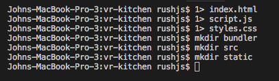
Step 2.) Move the index.html, script.js, and styles.css into the
src
directory we have just created.
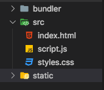
Step 4.) in your terminal run
npm init -y
Step 5.) next lets generate our
node_modules by installing some
dependencies necessary for our
webpack bundling.
- Some of these dependencies include babel( js compiler), port finder,
webpack file loading dependencies, a web pack dev server and more. This
tutorial will not go over them individually, however I suggest you search
them and read up a bit on what they are doing as it is interesting and
will help you understand how webpack works a bit better.
- Here is the list of dependencies, you may
copy and paste into your package.json file
in the dependencies section. once you have copied them, simply run npm i ,
and all the inserted dependencies will install in one go.
npm install
Step. 6.) lets create our
webpack files.
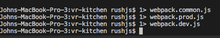
Step 7.) move them into the bundler folder. Your folders should
look identical to this now.
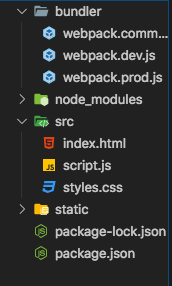
Step 8.) Lets start with our
webpack.dev.js File. This file is
responsible for merging our webpack configurations(that we will later
create) and grabbing our ip, using port finder sync to serve our project
locally on the webpack-dev-server. Copy and paste the blue code below into
your webpack.dev.js
Step 9.) Lets open the
webpack.prod.js. Much like the
dev.js file, this is also responsible for merging our configurations
(still not created) , and initiates production mode by remove all files
inside webpack's output.path directory, as well as all unused webpack
assets after every successful rebuild. The clean-webpack-plugin is
responsible for removing your build folder before building.
-Copy and paste the code into the
webpack.prod.js
Step 10.) Lets make our webpack configuration! This is done in the
webpack.common.js. So go ahead
and open it up. This file is responsible for a lot, ill try to break it
down briefly. In order to
-Using path, we can first specify and entry point for this new module we
want to create and bundle. Additionally, we need to specify our output
options, as well as our plugins. as you see in our output.path =
path.resolve(__dirname, “../dist/) we are saying hey we want this new
bundled module to be in a folder called dist and we want it in the root of
our project folder.
Our plugins will help load our files from our src folder, it will search
inside to the spot that we point to and in our testing options we can
specify in js what file types we would like to search for. If it finds the
respective file type, ( in our case its .html, .js, .css, as well as
assets such as .jpg, .png and so on), it include them in the bundle.
Htmlwebpackplugin and copywebpackplugin both take one object as a
parameter to define where in our project to search.
Please ensure your entire
webpack.common.js is identical to
the code below.
Step 11.) Add something to your
index.html to test. ** imprortant**
no need to link js or css files into your index, webpack config will
handle this. However, we do need to import our css into our js file like
so.
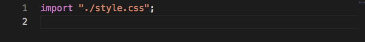
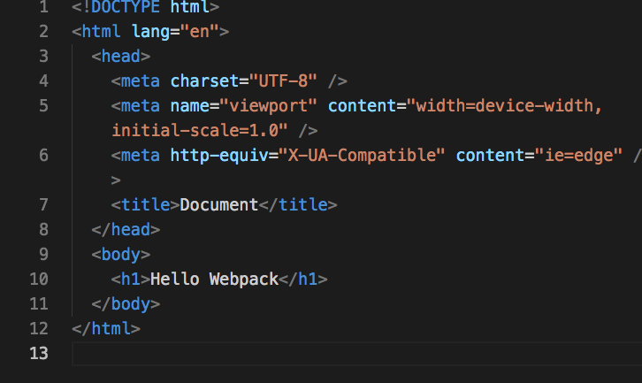
Step 12.) To run locally, we need to use the webpack dev server. Lets open
package.json
and write some scripts. The dev script will run our run our webpack dev
server with our configurations defined in our
webpack.dev.js. Also, when we are ready to build, we can do run our build script.
Finally, this will bundle our files
with our configurations defined in our
webpack.prod.js.
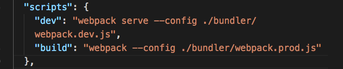
Step.13) To run our dev script for local development, simply open a new
terminal and type in
npm run dev
Step 14.) Now, if you look we have a compiling error. Something about it
wanting something to be in there to look for maybe?? idk why, but if you
add a .gitkeep file into your static
folder it will be all set to go.
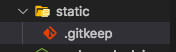
You should now see this in your browser if nothing horrible has happened.
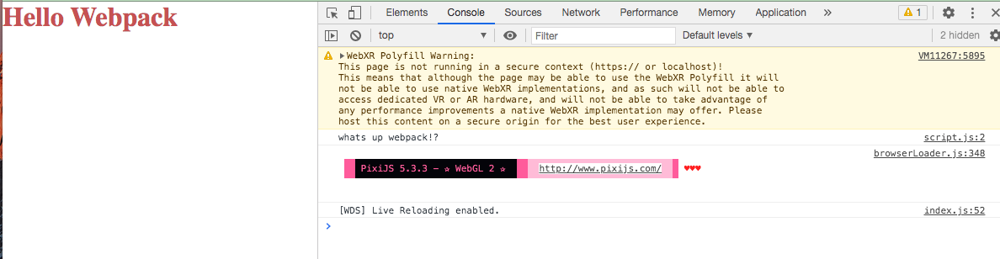
When you are ready to be done, you can build and push to a server of
choice.
After building, you should see a dist folder in your
projects root, that will contain our bundled files!
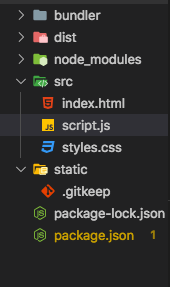
Lastly, I will show you how to push this project to
Heroku.
Step 15.) lets install express and add index.js file to our project root
npm i express
1> index.js
Step 16.) Set up basic express server in our index.js in our projects
root.
Step 17.) Add these scripts to your package.json
"start": "node index.js", "heroku-postbuild": "webpack --config
./bundler/webpack.prod.js"
Your scripts should now look like this
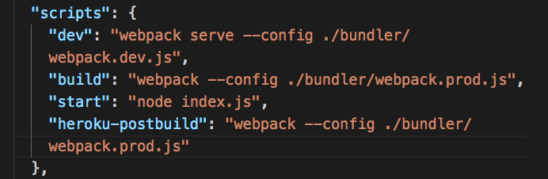
** NOTE: You need to run the build script one more time at this
point
Step 18.) login using heroku cli
heroku login
Step 19.) Create a new heroku app using
heroku create
Step 20.) initialize a new git repo with
git init
on VS code , at this time you may be asked to add a
.gitignore , go ahead and click yes.
Step 21.) retrieve the repo you just created and deploy.
heroku git:remote --a your-heroku-app-name
git add .
git commit -am “first”
git push heroku master
You should now see a link to your hosted site in your terminal.